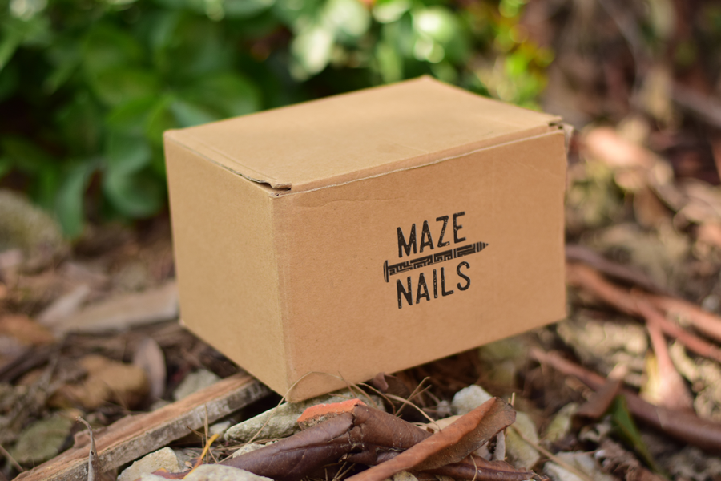
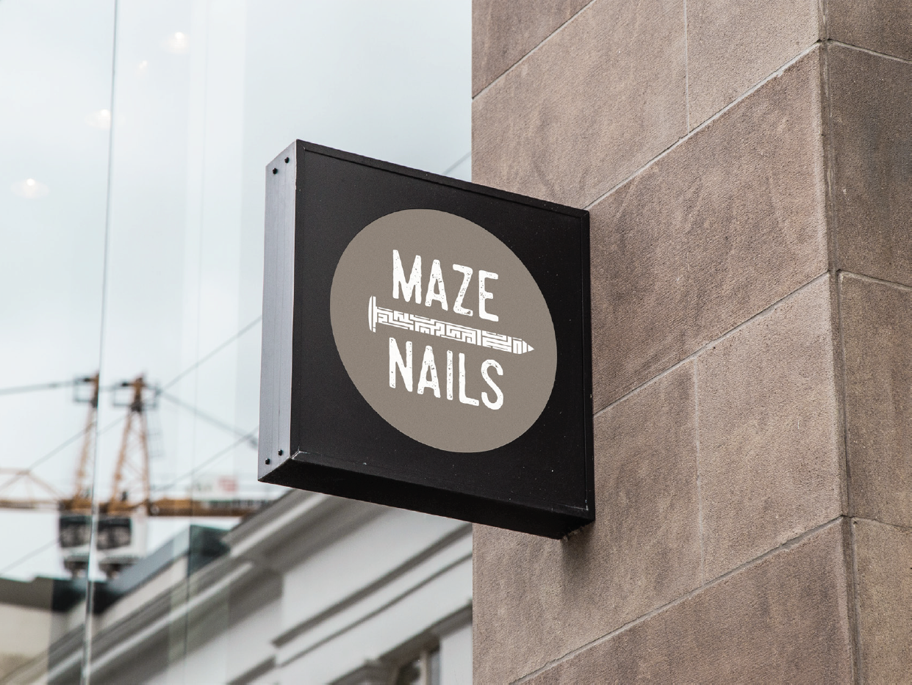

Branding
Maze Nails
The purpose of this project was to familiarize myself with the standards of branding. Proper application of an organization's visual assets such as their logo, is critical for building a strong brand awareness and maintaining the integrity of a brand. I created the brand guidelines for designers to use when creating any merchandise for Maze Nails. Marketing assets included a business stationery system, clothing, hats, boxes, signs, and transportation.
View Brand Guidelines

My Role
- Brand Designer
Timeline
- January 2017 - February 2017
Tools
- InDesign
- Illustrator
- Photoshop
Process
Brand Identity
For the primary headline typeface, I selected Steelworks and for the subtext I selected Avant Garde. The primary color used is Maze Brown. The overall tone that the company would like to portray is strong, reliable, and friendly. View the complete brand guidelines above.
